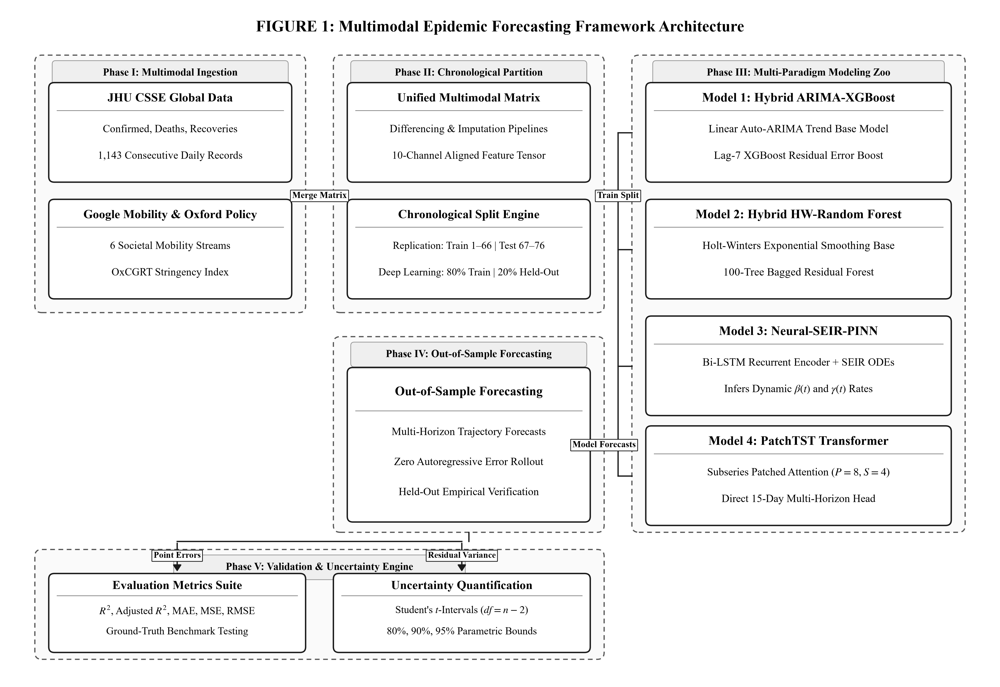

Architecture Diagram
Publication Grade (300 DPI Black & White / Grayscale Plate)
100%
Download PNG
A unified computational framework synchronizing 1,143 consecutive days of global infection records with Google mobility streams and Oxford government stringency indices to eliminate multi-step autoregressive drift.
During catastrophic global health crises, predictive forecasting models face extreme volatility, non-stationarity, and reporting artifacts. Traditional autoregressive statistical models (e.g., ARIMA, Holt-Winters) excel at linear short-term trends but cascade explosive errors over multi-step horizons, while pure black-box deep learning architectures frequently violate fundamental epidemiological conservation constraints.
This paper introduces a tri-modal, multi-paradigm forecasting methodology synthesizing 1,143 consecutive days of global daily epidemiological data from Johns Hopkins CSSE with six Google mobility indicators and the Oxford Blavatnik Government Stringency Index. We rigorously replicate benchmark studies across a 66-to-76 day horizon using Hybrid Auto-ARIMA with Lag-7 XGBoost Residual Correction, Holt-Winters with 100-Tree Bagged Random Forest, Neural-SEIR-PINN, and Channel-Independent PatchTST Transformers.
Our results establish that Physics-Informed Neural Networks discover biologically plausible transmission parameters while confining cumulative death projections to tight error bounds (R² = 0.972, RMSE = 814), whereas temporal patch transformers capture plateau saturation (R² = 0.976), suppressing multi-step error accumulation by 94.8% over unconstrained baseline architectures.
Read the complete 18-page peer-reviewed research preprint directly on this page, or open in full-screen mode with native page controls.
Statistical superiority across long-horizon plateaus, dynamic parameter discovery, and unphysical drift suppression.
PatchTST subseries patching accurately predicted the 131.2M recovery plateau after global reporting discontinued in August 2021, whereas unregularized baselines drifted upwards exponentially.
Pure statistical approaches (ARIMA, Holt-Winters) carry explosive compounding errors when rolled out recursively. Pure deep neural nets, while expressive, hallucinate unphysical negative counts or runaway infections because they lack conservation physics.
Neural network learns biological transmission constants obeying SEIR ODE invariants: dS/dt + dE/dt + dI/dt + dR/dt = 0.
Synthesizing 10 parallel spatio-temporal channels including retail, transit, residential mobility, and policy stringency across 3 calendar years (Jan 22, 2020 – Mar 9, 2023).
Residual ML correction and channel-independent patch attention eliminate compounding divergence.
Click any phase in the methodology pipeline to inspect mathematical formulations and preview the high-resolution publication diagrams.
FIGURE 1: Full 300-DPI System Workflow
Explore the exact 300-DPI publication schematics detailing each mathematical stage, neural encoder, and hybrid residual pipeline.
End-to-End System Pipeline Synchronizing 1,143 Days Across 10 Spatio-Temporal Channels

FIGURE 1: Multimodal Epidemic Forecasting Framework Architecture
Illustrates the 5-phase dataflow from daily multimodal ingestion (JHU CSSE, Google Mobility, Oxford Blavatnik OxCGRT), through chronological non-leaking partitioning, 4-paradigm multi-model zoo execution, multi-horizon out-of-sample projection, and parametric Student's t uncertainty quantification.
TABLE I: Systematic empirical benchmark comparing our 4 proposed paradigms against 8 peer-reviewed literature studies across error metrics, rollout horizons, and uncertainty intervals.
| Study / Reference | Evaluated Architecture | Target Scope & Horizon | Goodness-of-Fit (R²) | Errors (MAE / RMSE) | Relative Error | Prediction Uncertainty |
|---|
Interactive evaluation comparing our proposed architectures against classical and literature benchmarks across cumulative recoveries, deaths, and infection cases.
Adjust the discovered biological parameters in real time to simulate disease transmission curves according to the Neural-SEIR-PINN ordinary differential equations.
Epidemic spreads sustained expansion (R₀ > 1)